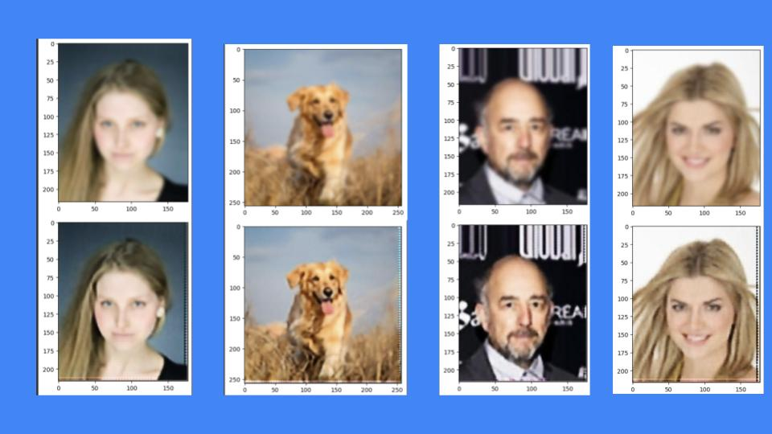
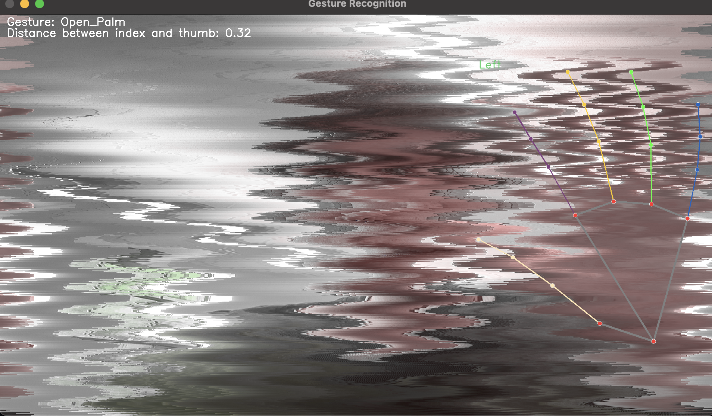

Super Resolution
Machine learning project on an image denoising/super-resolution app, trained on the CelebA dataset. Utilized an auto-encoder archtiecture in PyTorch.

Gesture Recognition
Used Googles' media pipe to create the backend of an upp that detects a hand, gestures made by the hand, and the distance between hand. This app manipulates the feed from the camera, depending on all these factors.

evancureton.com
An HTML/CSS website to showcase some projects and mess around.